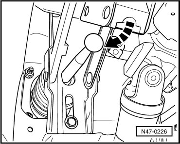
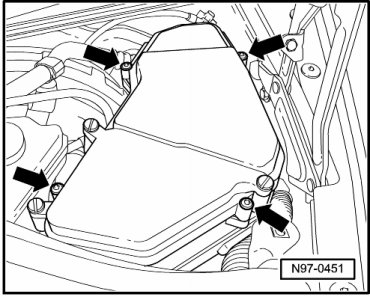
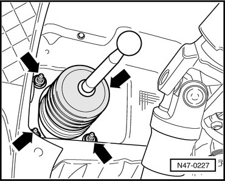

Brake Booster
Brake Booster
Special tools, testers and auxiliary items required
• Brake charger/bleeder unit (VAS 5234)
Removing
- Remove driver side trim.
- Remove brake light switch/brake pedal switch. Refer to --> [ Brake Light Switch and Brake Pedal Switch ] Service and Repair.
- Remove bracket for brake light switch.
- Disconnect brake pedal from brake booster. Refer to --> [ Brake Pedal and Booster Separating ] Brake Pedal and Booster Separating.
- Remove support on mounting bracket through which pressure rod of brake booster runs.

- Remove plenum chamber cover.
- Remove engine compartment seal and cover strip in area of brake booster.
- Remove facing wall of plenum chamber.
- Disconnect connector from brake pressure sensor.
- Disconnect connector off float warning indicator sensor.
- Remove ground cable from ground point on body behind E-box, remove wiring harness from retainer behind brake booster and lay aside.
- Remove E-box from left plenum chamber from retainer and lay as far as possible aside.

- Place sufficient lint free cloths in plenum chamber in the area of the brake master cylinder.
- Extract as much brake fluid as possible from brake fluid reservoir using brake charger/bleeder unit (VAS 5234) or suction adapters (VAG 1869/4).
- Remove brake fluid reservoir, press the engagement straps toward outside at reservoir and simultaneously pull brake fluid reservoir out of sealing plugs.
- Remove left front brake line from retainer on master brake cylinder.
- Disconnect brake lines from master brake cylinder and seal brake lines using sealing plugs (1H0 698 311 A).
- Remove brake master cylinder nuts.
- Carefully take brake master cylinder out of brake booster.
- Remove brake booster membrane position sensor. Refer to --> [ Brake Booster Membrane Position Sensor ] Service and Repair.
- Pull vacuum hose out of brake booster.
- Remove brake lines from 3 slot bracket at brake booster.
- Disconnect left front brake line at separating point in left front wheel housing.
- Remove nuts from brake booster.

- Carefully remove brake booster from plenum chamber.
Installing
- Installation is performed in the reverse order of removal.
Observe the following points when installing:
Brake Pedal and Brake Booster, Connecting
- Hold ball head of push rod in front of mounting and push brake pedal in direction of brake booster, so the ball head locates audibly.
- After installing, bleed the brake system. Refer to --> [ Brake System Bleeding General Information ] Brake System Bleeding General Information.
After bleeding brake system, basic setting for brake pressure sensor 1 (G201) must be performed.
(VAS 5051), connecting and selecting functions, refer to --> [ VAS 5051, Connecting and Selecting Functions ] Scan Tool Testing and Procedures.
- Brake light switch, removing and installing. Refer to --> [ Brake Light Switch and Brake Pedal Switch ] Service and Repair.